The Hershey vector fonts used by IDL were digitized by Dr. A.V. Hershey of the Naval Weapons Laboratory. Characters in the vector fonts are stored as equations, and can be scaled and rotated in three dimensions. They are drawn as lines on the current graphics device, and are displayed quickly and efficiently by IDL. The Hershey vector fonts are built into IDL itself, and are always available.
All the available fonts are illustrated below. The default Hershey vector font is Font 3, Simplex Roman.
To use the Hershey vector font system with IDL Direct Graphics (this is the default behavior), either set the value of the IDL system variable !P.FONT to -1 (negative one), or set the FONT keyword of one of the Direct Graphics routines to -1. To use the vector font system with IDL Object Graphics, consult IDLgrFont . To use the vectors fonts with IDL's Graphics functions, see the TEXT function.
Once the vector font system is selected, use an embedded formatting command to select a vector font (or fonts) for each string (see Embedded Formatting Commands for details).
For example, to use the Complex Italic Hershey font for a direct graphics plot, you could use the following command:
PLOT, RANDOMU(seed,10), FONT=-1, TITLE="!8Title of my plot"
Similarly, to use the same font for an IDL Graphics function plot, you could use the following command:
p = PLOT(RANDOMU(seed,10), FONT_NAME="Hershey 8", TITLE="Title of my plot")
The default Hershey vector font (Font 3, Simplex Roman) follows the ISO Latin 1 Encoding scheme and contains many international characters. The illustration of this font below can be used to find the codes for the special characters.
For example, suppose you want to display some text with an Angstrom symbol in it. Looking at the chart for font 3, we see that the Angstrom symbol has code 197. Non-printable characters can be represented in IDL using octal or hexadecimal notation and the STRING function (see Non-Printing Characters for details). So the Angstrom can be printed by inserting a STRING(197B) character in a Direct Graphics text string as follows:
XYOUTS,.1, .5, 'Here is an Angstrom symbol: ' + STRING(197B), $
/NORM, CHARSIZE=3
Different character sets map Greek characters to keyboard keys differently. The Microsoft Windows Symbol font, for example, maps the capital letter Chi ( C ) to the Latin capital C, whereas the Hershey Greek fonts map the capital Gamma ( G ) to the latin capital C. Use the font tables under "Hershey Vector Font Samples" to determine the mapping between Greek and Latin character sets.
The EFONT procedure is a widget application that allows you to edit the Hershey fonts and save the results. Use this routine to add special characters or completely new, custom fonts to the Hershey fonts.
The following figures show samples of various Hershey vector-drawn fonts. The SHOWFONT command was used to create these figures. For example, to display the following figure on the screen, you would use the command:
SHOWFONT, 3, 'Simplex Roman'
To output this figure to a postscript file:
SET_PLOT, 'PS'
SHOWFONT, 3, 'Simplex Roman'
DEVICE, /CLOSE
Note: To read the character number, add the column index (along the top) to the row index. For example, the capital letter "A" is 65, and the "+" symbol is 43.
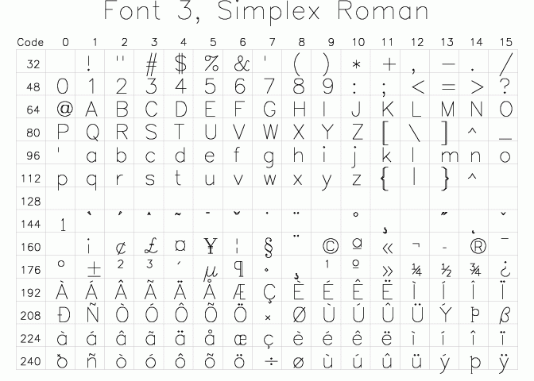
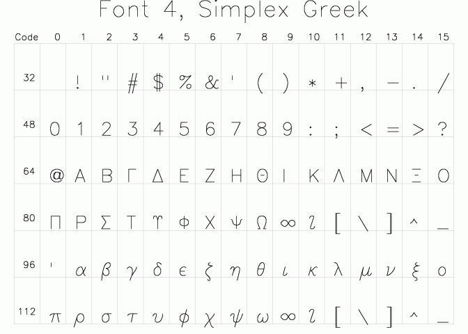
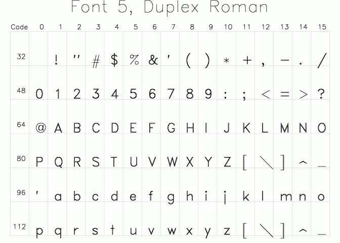
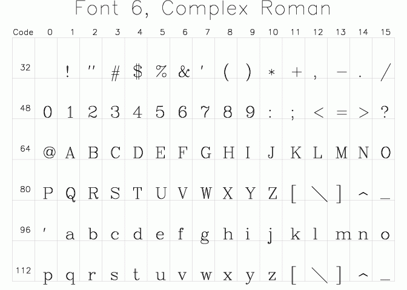
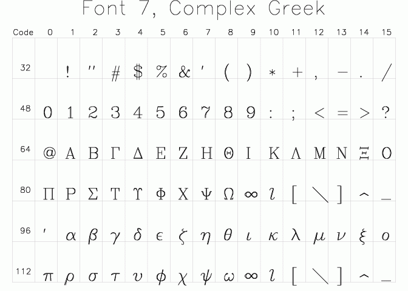
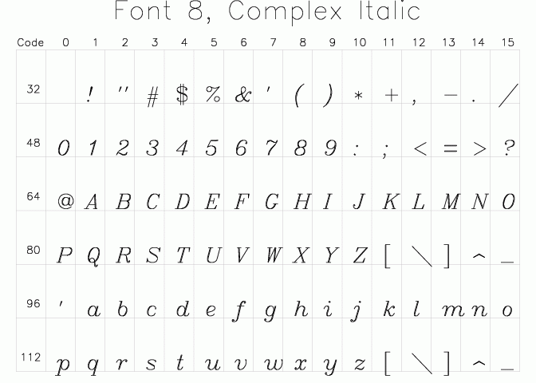
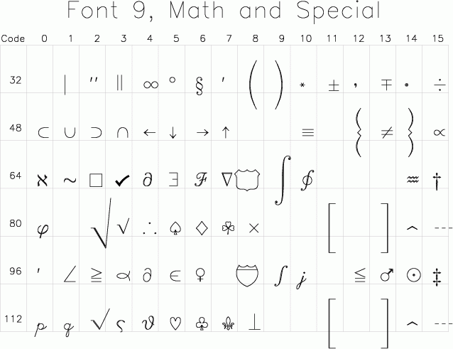
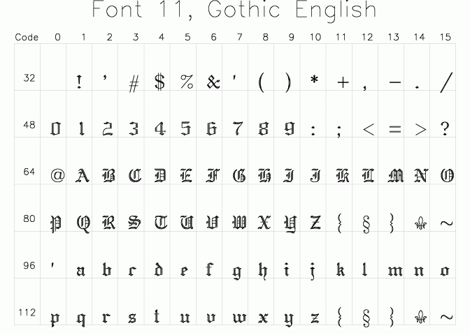
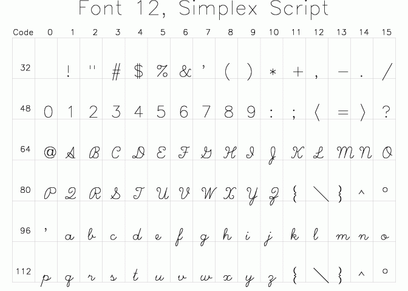
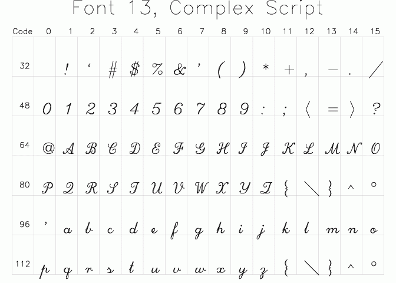
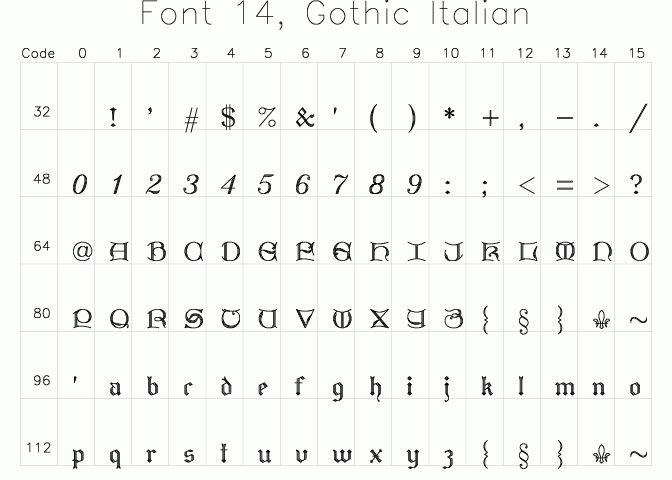
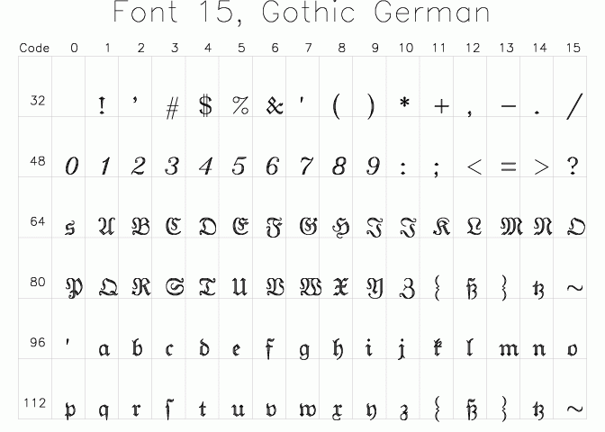
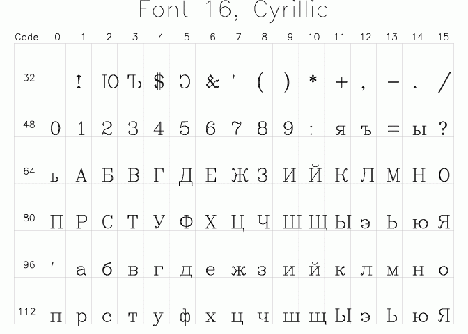
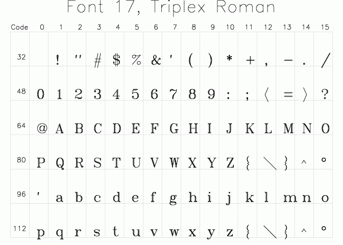
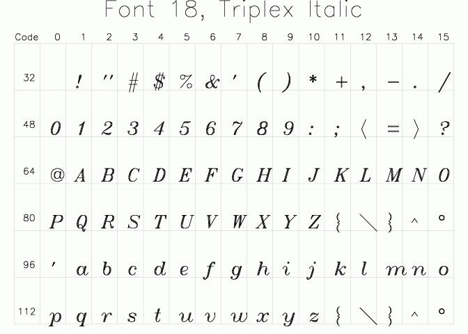
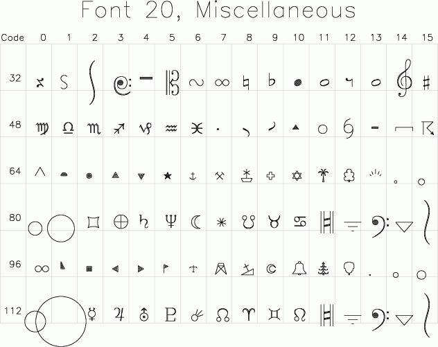